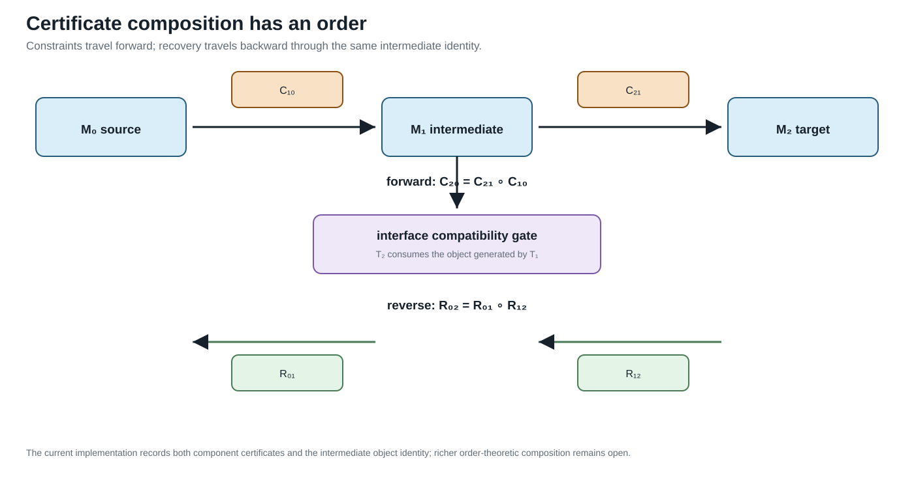

Certificate schema and composition
Page status: versioned certificate schema and composition contract; associativity and richer interface compatibility remain open.
A transformation result is useful only if downstream work can determine what it means. Version 1.1.0 of the book's transformation-certificate interface is defined by schemas/transformation-certificate.schema.json.
Common interface
| Field | Role |
|---|---|
certificate_id, rule_id | stable claim identity and applied rule |
classification | exact normalization, exact compilation, exact behavioural reduction, inner restriction, outer relaxation, scenario approximation, or mixed |
source, target | model categories and object identities |
interfaces | typed source/target contracts for states, constraints, decisions, objectives, units, and boundary quantities |
typed_interfaces | crosswalk from the certificate-local labels to the checked state-space/unit vocabulary |
preconditions | conditions under which the classification holds |
preserves, forgets | the semantic contract |
constraint_map | forward transport of declared constraints |
recovery_map | reconstruction of source quantities from target results |
provenance | source-to-target lineage and implementation context |
evidence | derivation data, witnesses, permutations, or computed results |
numerical_evidence | optional solver status, optimality scope, residual/tolerance, conditioning/backward error, and uncertainty status |
JSON-schema validity establishes a structural contract. It does not prove that the reported classification or equations are true. Those remain claims that need derivation, tests, and independent review.
When numerical evidence is reported, optimality_status distinguishes a local solve, a branch-scoped comparison, and a globally certified result. A residual and tolerance describe numerical consistency; they do not establish model adequacy. conditioning and backward_error make numerical fragility visible, while uncertainty_status records whether parameter or measurement uncertainty was quantified. Deterministic algebraic certificates may declare solver and optimality as not_applicable rather than implying an optimization result.
Sequential composition
Let exact transformations be
\[\mathcal M_0\xrightarrow{T_1}\mathcal M_1 \xrightarrow{T_2}\mathcal M_2.\]
The implemented composition accepts the pair only when an object generated by $T_1$ is explicitly consumed by $T_2$. Constraint maps execute in the forward order,
\[C_{20}=C_{21}\circ C_{10},\]
whereas recovery maps execute in reverse order,
\[R_{02}=R_{01}\circ R_{12}.\]
The composite retains the untouched sources of $T_2$, the original sources of $T_1$, both component certificate identities, and the intermediate object identity. Non-exact component rules are rejected for now because composing inner, outer, and mixed approximations requires a more explicit order-theoretic calculus.
Composition also carries the six interface contracts and, when present, the typed crosswalk from the first source to the second target. This is a trace, not yet a proof of compatibility: the current rule records both component relations but still uses generated/source object identity as its executable meeting check.

The intermediate identity is the meeting point: constraints compose forward, while recovery reverses the transformation order.
Normalization followed by elimination
The executable example first normalizes $\ell_2 b j$ from $(n,a)$ to $(a,n)$ and then eliminates the zero-injection junction between $\ell_1 i b$ and the normalized element. The composed certificate records:
- the permutation as the first forward step;
- series constraint intersection as the second forward step;
- junction recovery before inverse coordinate recovery; and
- the unnormalized source identities $\ell_1$, $\ell_2$, and $b$.
This is claim TR-COMP-001. The experiments/generated directory contains both the composed normalization/series certificate and the standalone series certificate.
Version 1.1 boundary
Version 1.1 makes six interface categories mandatory. Each category records a source list, a target list, and the relation between them. Empty lists are allowed and meaningful: for example, a fixed-parameter leakage compilation declares that it introduces no tap or investment decision. The fields are typed by role but their individual entries are still prose rather than a formal state-space or unit algebra. The optional typed_interfaces extension now binds the generated certificates to experiments/generated/state-space-unit-witness.json: it records the mapped unit families, variable and boundary labels, state-domain IDs, and any unit labels that remain unresolved. The build checker requires this attachment on all sixteen public certificate artifacts, while the schema keeps it optional for older external certificates.
The schema does not yet type uncertainty sets or prove that composed interface relations are compatible. Nor does it establish associativity modulo serialization. Those extensions should be driven by the grounding, switch, and larger OPF case studies. Current Julia generators attach the crosswalk through TransformationContracts.attach_typed_interfaces; the Python helper is retained only for migration of older generated artifacts.
Release-oriented semantic matrix
The generated experiments/generated/semantic-evaluator-matrix.json binds each of the sixteen public certificate artifacts to the Julia evaluator source, its semantic test file, and the evaluator symbol or rule name. Each row checks that source and target identities, typed unit coverage, the canonical state space witness, evaluator provenance, and nonempty evidence are all present. The package test matrix reads these rows in addition to validating the certificate structure. This is a release traceability contract, not a claim that all evaluators share one numerical backend: the rows intentionally span package-independent algebra, BMOPFTools cross-checks, and JuMP/Ipopt cases.
The release gate additionally runs the public facade, typed state-space tests, and this 16-certificate matrix from a separately instantiated package checkout. The pinned result is recorded in experiments/generated/clean-package-matrix.json; it is a package-isolation check, not a claim that the full research fixture has no external dependency.